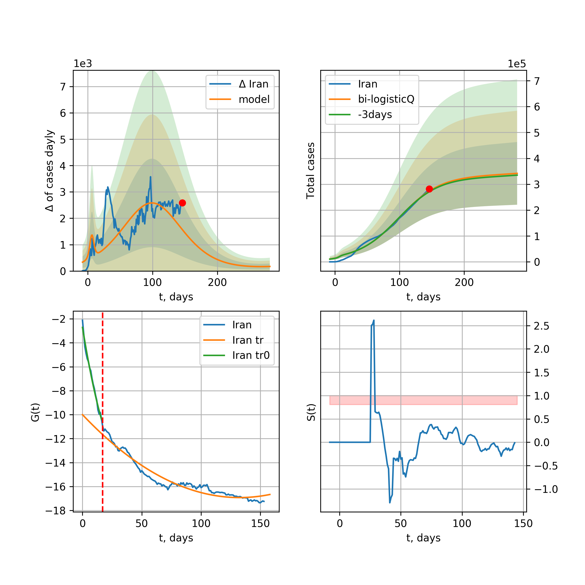
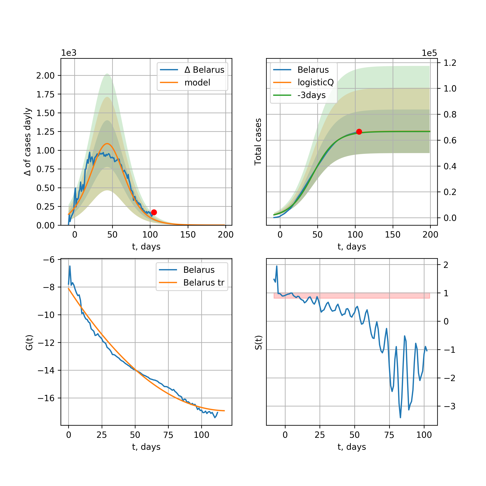
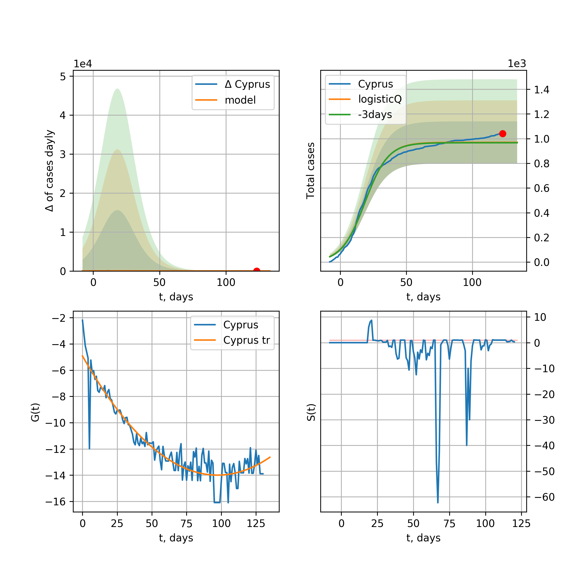

Multi-logistic model of COVID-19 dynamics
Model, code, results
Project maintained by algmaknick Hosted on GitHub Pages — Theme by mattgraham
World

World data at: 2020-05-06
+3 day model MAPE: 0.044176
model: bi-logisticQ
coeffs: [ 3.54833227e+06 1.46729343e-06 7.32618643e+01 -7.83894430e+04]
S.Korea scenario coeffs: [0.35416971, 0.02606324, 4.35859408, 19.30413219]
rational stdev: 0.140936
forecast at the end of period: +311 days
deltaDaycases: 548
total cases: 5204186 ± 733454
total death: 361079 ± 152666
tri-logisticQ approximation splitting points: 26,59
trend coefficient of determination: 0.957216
intercept_: -9.890425229004336
coeffs_: [ 0. -0.26614025 0.00124975]
trend1 coefficient of determination: 0.874764
intercept_: -22.035447570025077
coeffs_: [ 0. 0.31660897 -0.00341999]
trend coefficient of determination: 0.990354
intercept_: -1.2748899842411205
coeffs_: [ 0. -0.33238291 0.0015612 ]
European Union

European Union data at: 2020-05-06
+3 day model MAPE: 0.014041
model: logisticQ
coeffs: [ 1.04359877e+06 1.06550591e-06 4.86446819e+01 -1.16357761e+05]
S.Korea scenario coeffs: [0.35416971, 0.02606324, 4.35859408, 19.30413219]
rational stdev: 0.428078
forecast at the end of period: +206 days
deltaDaycases: 230
total cases: 1409586 ± 603412
total death: 148071 ± 190157
trend coefficient of determination: 0.987176
intercept_: -3.009107664880327
coeffs_: [ 0. -0.32871197 0.00169337]
USA

USA data at: 2020-05-06
+3 day model MAPE: 0.038808
model: logisticQ
coeffs: [ 1.32967530e+06 1.11375892e-06 3.77198338e+01 -1.01305854e+05]
S.Korea scenario coeffs: [0.35416971, 0.02606324, 4.35859408, 19.30413219]
rational stdev: 0.425200
forecast at the end of period: +157 days
deltaDaycases: 1389
total cases: 1775396 ± 754897
total death: 105140 ± 134116
trend coefficient of determination: 0.996622
intercept_: -5.598151048675762
coeffs_: [ 0. -0.37264022 0.0028625 ]
Spain

Spain data at: 2020-05-06
+3 day model MAPE: 0.011343
model: bi-logisticQ
coeffs: [ 7.34800526e+04 3.37625624e-06 5.03713026e+01 -7.13101280e+04]
rational stdev: 0.336215
forecast at the end of period: +59 days
deltaDaycases: 0
total cases: 253969 ± 85388
total death: 25886 ± 26109
bi-logisticQ approximation splitting point: 50
trend coefficient of determination: 0.997202
intercept_: -3.834231460165485
coeffs_: [ 0. -0.42809872 0.00374483]
trend coefficient of determination: 0.591734
intercept_: -15.72253322366293
coeffs_: [ 0. 0.04318831 -0.00094144]
Italy

Italy data at: 2020-05-06
+3 day model MAPE: 0.014219
model: logisticQ
coeffs: [ 2.10914327e+05 7.12634178e-07 2.99874429e+01 -1.50339882e+05]
S.Korea scenario coeffs: [0.35416971, 0.02606324, 4.35859408, 19.30413219]
rational stdev: 0.324615
forecast at the end of period: +115 days
deltaDaycases: 252
total cases: 280718 ± 91125
total death: 38855 ± 37838
trend coefficient of determination: 0.992708
intercept_: -7.206919873064125
coeffs_: [ 0. -0.27499845 0.00194792]
United Kingdom

United Kingdom data at: 2020-05-06
+3 day model MAPE: 0.041479
model: logisticQ
coeffs: [ 2.11281348e+05 1.41479334e-06 4.25826579e+01 -8.13881153e+04]
S.Korea scenario coeffs: [0.35416971, 0.02606324, 4.35859408, 19.30413219]
rational stdev: 0.397965
forecast at the end of period: +171 days
deltaDaycases: 251
total cases: 281599 ± 112066
total death: 42115 ± 50280
trend coefficient of determination: 0.995450
intercept_: -4.1814589428697735
coeffs_: [ 0. -0.30964669 0.00201633]
France

France data at: 2020-05-06
+3 day model MAPE: 0.006449
model: logisticQ
coeffs: [ 1.70588447e+05 2.36352175e-06 3.24781513e+01 -6.28631972e+04]
S.Korea scenario coeffs: [0.35416971, 0.02606324, 4.35859408, 19.30413219]
rational stdev: 0.311278
forecast at the end of period: +125 days
deltaDaycases: 136
total cases: 229186 ± 71340
total death: 33957 ± 31710
trend coefficient of determination: 0.980262
intercept_: -5.002026917391758
coeffs_: [ 0. -0.3131316 0.00194825]
Germany

Germany data at: 2020-05-06
+3 day model MAPE: 0.011111
model: logisticQ
coeffs: [ 1.62934750e+05 1.08867864e-06 3.02035177e+01 -1.31866677e+05]
S.Korea scenario coeffs: [0.35416971, 0.02606324, 4.35859408, 19.30413219]
rational stdev: 0.372367
forecast at the end of period: +129 days
deltaDaycases: 50
total cases: 219963 ± 81907
total death: 9516 ± 10630
trend coefficient of determination: 0.993227
intercept_: -4.651514571663748
coeffs_: [ 0. -0.33884574 0.00229353]
Turkey

Turkey data at: 2020-05-06
+3 day model MAPE: 0.018775
model: logisticQ
coeffs: [ 1.32834071e+05 2.16263784e-06 2.74955976e+01 -6.82747032e+04]
S.Korea scenario coeffs: [0.35416971, 0.02606324, 4.35859408, 19.30413219]
rational stdev: 0.391508
forecast at the end of period: +126 days
deltaDaycases: 58
total cases: 179111 ± 70123
total death: 4872 ± 5722
trend coefficient of determination: 0.976711
intercept_: -3.101785936083756
coeffs_: [ 0. -0.47705914 0.00453876]
Russia

Russia data at: 2020-05-06
+3 day model MAPE: 0.114764
model: logisticQ
coeffs: [ 2.61027636e+05 5.84020844e-06 5.53216968e+01 -2.21833005e+04]
S.Korea scenario coeffs: [0.35416971, 0.02606324, 4.35859408, 19.30413219]
rational stdev: 0.390622
forecast at the end of period: +227 days
deltaDaycases: 299
total cases: 348776 ± 136239
total death: 3230 ± 3785
trend coefficient of determination: 0.954057
intercept_: -3.6648768782941836
coeffs_: [ 0. -0.20424305 0.00043674]
Iran

Iran data at: 2020-05-06
+3 day model MAPE: 0.020328
model: bi-logisticQ
coeffs: [ 9.00243167e+04 8.70104423e-07 3.68643313e+01 -1.39462033e+05]
S.Korea scenario coeffs: [0.35, 0.5, 3, 1]
rational stdev: 0.318782
forecast at the end of period: +101 days
deltaDaycases: 50
total cases: 128070 ± 40826
total death: 8086 ± 7733
bi-logisticQ approximation splitting point: 17
trend coefficient of determination: 0.987745
intercept_: -2.720144864989817
coeffs_: [ 0. -0.61067547 0.00823538]
trend coefficient of determination: 0.980586
intercept_: -8.37009758776474
coeffs_: [ 0. -0.1664835 0.00083151]
Brazil

Brazil data at: 2020-05-06
+3 day model MAPE: 0.032933
model: logisticQ
coeffs: [ 3.05393560e+05 8.62432138e-06 6.11764353e+01 -1.07281489e+04]
S.Korea scenario coeffs: [0.35416971, 0.02606324, 4.35859408, 19.30413219]
rational stdev: 0.410168
forecast at the end of period: +276 days
deltaDaycases: 213
total cases: 408865 ± 167703
total death: 27733 ± 34125
trend coefficient of determination: 0.848352
intercept_: -3.91285535158518
coeffs_: [ 0. -0.312529 0.0023747]
Canada

Canada data at: 2020-05-06
+3 day model MAPE: 0.041548
model: logisticQ
coeffs: [ 7.20922804e+04 1.36886953e-06 4.12015824e+01 -7.53334160e+04]
S.Korea scenario coeffs: [0.35416971, 0.02606324, 4.35859408, 19.30413219]
rational stdev: 0.404530
forecast at the end of period: +196 days
deltaDaycases: 27
total cases: 97099 ± 39279
total death: 6471 ± 7853
trend coefficient of determination: 0.986186
intercept_: -4.6306807314191785
coeffs_: [ 0. -0.26927088 0.00173432]
Belgium

Belgium data at: 2020-05-06
+3 day model MAPE: 0.007028
model: logisticQ
coeffs: [ 5.20994750e+04 1.65403120e-06 3.18901408e+01 -7.55308329e+04]
S.Korea scenario coeffs: [0.35416971, 0.02606324, 4.35859408, 19.30413219]
rational stdev: 0.344945
forecast at the end of period: +129 days
deltaDaycases: 53
total cases: 69691 ± 24039
total death: 11444 ± 11842
trend coefficient of determination: 0.978138
intercept_: -4.269812922821853
coeffs_: [ 0. -0.32259807 0.00233035]
Peru

Peru data at: 2020-05-06
+3 day model MAPE: 0.023702
model: logisticQ
coeffs: [ 9.99340096e+04 5.95513828e-06 5.06134129e+01 -1.89094562e+04]
S.Korea scenario coeffs: [0.35416971, 0.02606324, 4.35859408, 19.30413219]
rational stdev: 0.357164
forecast at the end of period: +227 days
deltaDaycases: 69
total cases: 134081 ± 47889
total death: 3749 ± 4017
trend coefficient of determination: 0.966820
intercept_: -3.5601379025946693
coeffs_: [ 0. -0.29921705 0.00221326]
Netherlands

Netherlands data at: 2020-05-06
+3 day model MAPE: 0.007113
model: logisticQ
coeffs: [ 4.22421328e+04 1.36580458e-06 3.32845528e+01 -8.67395145e+04]
S.Korea scenario coeffs: [0.35416971, 0.02606324, 4.35859408, 19.30413219]
rational stdev: 0.361262
forecast at the end of period: +129 days
deltaDaycases: 55
total cases: 56241 ± 20317
total death: 7083 ± 7676
trend coefficient of determination: 0.979915
intercept_: -3.282972647998113
coeffs_: [ 0. -0.35457448 0.00267369]
India

India data at: 2020-05-06
+3 day model MAPE: 0.109770
model: logisticQ
coeffs: [ 8.45751297e+04 4.41207967e-04 2.44207164e+01 -2.29010208e+02]
S.Korea scenario coeffs: [0.35416971, 0.02606324, 4.35859408, 19.30413219]
rational stdev: 0.158551
forecast at the end of period: +157 days
deltaDaycases: 25
total cases: 114069 ± 18085
total death: 3839 ± 1826
trend coefficient of determination: 0.976610
intercept_: -9.280671108158051
coeffs_: [ 0. -0.23422467 0.00327504]
Switzerland

Switzerland data at: 2020-05-06
+3 day model MAPE: 0.006850
model: logisticQ
coeffs: [ 2.92762657e+04 1.06268377e-06 2.54071711e+01 -1.43815538e+05]
S.Korea scenario coeffs: [0.35416971, 0.02606324, 4.35859408, 19.30413219]
rational stdev: 0.358384
forecast at the end of period: +101 days
deltaDaycases: 13
total cases: 39475 ± 14147
total death: 2370 ± 2548
trend coefficient of determination: 0.985297
intercept_: -3.5087721059475587
coeffs_: [ 0. -0.34857428 0.00242889]
Ecuador

Ecuador data at: 2020-05-06
+3 day model MAPE: 0.117329
model: logisticQ
coeffs: [ 2.81605413e+04 9.71692664e-07 3.03857643e+01 -1.06017982e+05]
S.Korea scenario coeffs: [0.35416971, 0.02606324, 4.35859408, 19.30413219]
rational stdev: 0.348994
forecast at the end of period: +129 days
deltaDaycases: 41
total cases: 37274 ± 13008
total death: 2049 ± 2145
trend coefficient of determination: 0.686752
intercept_: -5.441820866925347
coeffs_: [ 0. -0.32743663 0.00303364]
Portugal

Portugal data at: 2020-05-06
+3 day model MAPE: 0.016266
model: logisticQ
coeffs: [ 2.57455339e+04 1.06364179e-06 2.90749567e+01 -1.23755088e+05]
S.Korea scenario coeffs: [0.35416971, 0.02606324, 4.35859408, 19.30413219]
rational stdev: 0.390075
forecast at the end of period: +129 days
deltaDaycases: 11
total cases: 34687 ± 13530
total death: 1442 ± 1687
trend coefficient of determination: 0.987054
intercept_: -2.7315133490627073
coeffs_: [ 0. -0.37972765 0.00303526]
Saudi Arabia

Saudi Arabia data at: 2020-05-06
+3 day model MAPE: 0.053633
model: logisticQ
coeffs: [ 4.58996369e+04 3.25616115e-04 4.99882012e+01 -3.41315416e+02]
S.Korea scenario coeffs: [0.35416971, 0.02606324, 4.35859408, 19.30413219]
rational stdev: 0.368612
forecast at the end of period: +213 days
deltaDaycases: 45
total cases: 61366 ± 22620
total death: 401 ± 443
trend coefficient of determination: 0.804511
intercept_: -4.23685319001318
coeffs_: [ 0. -0.24290744 0.00167428]
Sweden

Sweden data at: 2020-05-06
+3 day model MAPE: 0.015662
model: logisticQ
coeffs: [ 2.77036282e+04 1.78969110e-06 4.38368320e+01 -5.15677234e+04]
S.Korea scenario coeffs: [0.35416971, 0.02606324, 4.35859408, 19.30413219]
rational stdev: 0.334140
forecast at the end of period: +185 days
deltaDaycases: 29
total cases: 36835 ± 12308
total death: 4529 ± 4539
trend coefficient of determination: 0.966546
intercept_: -3.9560763165772173
coeffs_: [ 0. -0.29123149 0.00222704]
Pakistan

Pakistan data at: 2020-05-06
+3 day model MAPE: 0.033918
model: bi-logisticQ
coeffs: [ 4.51325915e+04 5.22299699e-06 6.10158487e+01 -1.71298715e+04]
S.Korea scenario coeffs: [0.35416971, 0.02606324, 4.35859408, 19.30413219]
rational stdev: 0.422516
forecast at the end of period: +87 days
deltaDaycases: 5
total cases: 45498 ± 19223
total death: 1065 ± 1349
bi-logisticQ approximation splitting point: 20
trend coefficient of determination: 0.391568
intercept_: -3.9808806978581046
coeffs_: [ 0. -0.04620278 -0.00453428]
trend coefficient of determination: 0.936260
intercept_: -3.856647542116999
coeffs_: [ 0. -0.24367244 0.00165147]
Ireland

Ireland data at: 2020-05-06
+3 day model MAPE: 0.008266
model: logisticQ
coeffs: [ 2.32291101e+04 1.72770402e-05 3.44650109e+01 -7.76566930e+03]
S.Korea scenario coeffs: [0.35416971, 0.02606324, 4.35859408, 19.30413219]
rational stdev: 0.339323
forecast at the end of period: +143 days
deltaDaycases: 19
total cases: 31162 ± 10574
total death: 1925 ± 1959
trend coefficient of determination: 0.980611
intercept_: -3.5908300218265694
coeffs_: [ 0. -0.29816548 0.00204593]
Mexico

Mexico data at: 2020-05-06
+3 day model MAPE: 0.012421
model: logisticQ
coeffs: [ 5.20399835e+04 1.33453938e-05 3.99265714e+01 -7.84312630e+03]
S.Korea scenario coeffs: [0.35416971, 0.02606324, 4.35859408, 19.30413219]
rational stdev: 0.218677
forecast at the end of period: +213 days
deltaDaycases: 14
total cases: 70203 ± 15351
total death: 6869 ± 4506
trend coefficient of determination: 0.988376
intercept_: -6.578759171766179
coeffs_: [ 0. -0.21948004 0.00179646]
Singapore

Singapore data at: 2020-05-06
+3 day model MAPE: 0.039295
model: bi-logisticQ
coeffs: [ 2.06043053e+04 1.38937671e-03 8.28096387e+01 -5.33921684e+01]
S.Korea scenario coeffs: [0.35, 0.5, 4.0, 1.0]
rational stdev: 0.379253
forecast at the end of period: +101 days
deltaDaycases: 0
total cases: 20703 ± 7851
total death: 20 ± 22
bi-logisticQ approximation splitting point: 35
trend coefficient of determination: 0.914568
intercept_: -2.036640634366525
coeffs_: [ 0. -0.39517788 0.00592335]
trend coefficient of determination: 0.899777
intercept_: -10.021560283856326
coeffs_: [ 0. 0.09556079 -0.00126722]
Chile

Chile data at: 2020-05-06
+3 day model MAPE: 0.144838
model: logisticQ
coeffs: [ 3.96392047e+04 1.54776824e-06 5.36027639e+01 -4.97265233e+04]
S.Korea scenario coeffs: [0.35416971, 0.02606324, 4.35859408, 19.30413219]
rational stdev: 0.428693
forecast at the end of period: +297 days
deltaDaycases: 5
total cases: 53541 ± 22952
total death: 652 ± 838
trend coefficient of determination: 0.757917
intercept_: -4.24014822245268
coeffs_: [ 0. -0.28216831 0.00231494]
Israel

Israel data at: 2020-05-06
+3 day model MAPE: 0.009137
model: logisticQ
coeffs: [ 1.61648141e+04 1.01107530e-06 3.55225955e+01 -1.40666801e+05]
S.Korea scenario coeffs: [0.35416971, 0.02606324, 4.35859408, 19.30413219]
rational stdev: 0.408047
forecast at the end of period: +157 days
deltaDaycases: 3
total cases: 21846 ± 8914
total death: 320 ± 391
trend coefficient of determination: 0.937541
intercept_: -3.0714858880311535
coeffs_: [ 0. -0.227199 0.0007293]
Austria

Austria data at: 2020-05-06
+3 day model MAPE: 0.006560
model: logisticQ
coeffs: [ 1.50982534e+04 1.37460043e-06 2.32352627e+01 -1.46999319e+05]
S.Korea scenario coeffs: [0.35416971, 0.02606324, 4.35859408, 19.30413219]
rational stdev: 0.319599
forecast at the end of period: +87 days
deltaDaycases: 4
total cases: 20404 ± 6521
total death: 790 ± 757
trend coefficient of determination: 0.980789
intercept_: -2.797209121522714
coeffs_: [ 0. -0.3524372 0.00237561]
Belarus

Belarus data at: 2020-05-06
+3 day model MAPE: 0.023365
model: logisticQ
coeffs: [ 2.63296775e+04 6.66710461e-06 2.09385426e+01 -2.03150271e+04]
S.Korea scenario coeffs: [0.35416971, 0.02606324, 4.35859408, 19.30413219]
rational stdev: 0.233441
forecast at the end of period: +101 days
deltaDaycases: 43
total cases: 34993 ± 8168
total death: 203 ± 142
trend coefficient of determination: 0.977753
intercept_: -7.015664885345779
coeffs_: [ 0. -0.27449264 0.003095 ]
Japan

Japan data at: 2020-05-05
+3 day model MAPE: 0.022423
model: logisticQ
coeffs: [ 1.52176113e+04 1.15837760e-03 2.02548211e+01 -1.05375524e+02]
S.Korea scenario coeffs: [0.35416971, 0.02606324, 4.35859408, 19.30413219]
rational stdev: 0.095258
forecast at the end of period: +102 days
deltaDaycases: 9
total cases: 20472 ± 1950
total death: 746 ± 213
trend coefficient of determination: 0.918489
intercept_: -9.886611161935987
coeffs_: [ 0. -0.01437823 -0.00168034]
Qatar

Qatar data at: 2020-05-06
+3 day model MAPE: 0.015360
model: bi-logisticQ
coeffs: [ 1.45142693e+04 4.42414608e-05 4.64647587e+01 -3.57200542e+03]
S.Korea scenario coeffs: [0.35416971, 0.02606324, 4.35859408, 19.30413219]
rational stdev: 0.359399
forecast at the end of period: +227 days
deltaDaycases: 0
total cases: 31360 ± 11270
total death: 20 ± 21
bi-logisticQ approximation splitting point: 31
trend coefficient of determination: 0.919409
intercept_: -1.6852707465713292
coeffs_: [ 0. -0.86529683 0.02183056]
trend coefficient of determination: 0.953577
intercept_: -8.572258833997205
coeffs_: [ 0. -0.01962807 -0.00086816]
Poland

Poland data at: 2020-05-06
+3 day model MAPE: 0.034369
model: logisticQ
coeffs: [ 1.54610512e+04 1.53975044e-06 3.42524430e+01 -7.22929089e+04]
S.Korea scenario coeffs: [0.35416971, 0.02606324, 4.35859408, 19.30413219]
rational stdev: 0.363150
forecast at the end of period: +143 days
deltaDaycases: 18
total cases: 20601 ± 7481
total death: 1024 ± 1115
trend coefficient of determination: 0.984452
intercept_: -3.0131682136957423
coeffs_: [ 0. -0.33993464 0.00284404]
UAE

UAE data at: 2020-05-06
+3 day model MAPE: 0.040551
model: logisticQ
coeffs: [ 1.96255916e+04 3.05465619e-06 2.16505359e+01 -3.68490185e+04]
S.Korea scenario coeffs: [0.35416971, 0.02606324, 4.35859408, 19.30413219]
rational stdev: 0.173436
forecast at the end of period: +87 days
deltaDaycases: 61
total cases: 25257 ± 4380
total death: 251 ± 130
trend coefficient of determination: 0.978135
intercept_: -7.779161500437466
coeffs_: [ 0. -0.21304993 0.00207767]
Romania

Romania data at: 2020-05-06
+3 day model MAPE: 0.038440
model: logisticQ
coeffs: [ 1.48234230e+04 1.37141480e-06 3.34941367e+01 -8.14790596e+04]
S.Korea scenario coeffs: [0.35416971, 0.02606324, 4.35859408, 19.30413219]
rational stdev: 0.347563
forecast at the end of period: +157 days
deltaDaycases: 7
total cases: 19941 ± 6930
total death: 1221 ± 1273
trend coefficient of determination: 0.985696
intercept_: -3.8083532640018873
coeffs_: [ 0. -0.30354051 0.00244643]
Ukraine

Ukraine data at: 2020-05-06
+3 day model MAPE: 0.009993
model: logisticQ
coeffs: [ 1.73552644e+04 6.28040758e-06 3.37255721e+01 -1.95747662e+04]
S.Korea scenario coeffs: [0.35416971, 0.02606324, 4.35859408, 19.30413219]
rational stdev: 0.330016
forecast at the end of period: +143 days
deltaDaycases: 27
total cases: 23025 ± 7598
total death: 571 ± 565
trend coefficient of determination: 0.943560
intercept_: -3.790930482646381
coeffs_: [ 0. -0.33620437 0.00325826]
Indonesia

Indonesia data at: 2020-05-06
+3 day model MAPE: 0.034911
model: logisticQ
coeffs: [ 1.51470570e+04 1.02507192e-05 2.31864741e+01 -9.53618881e+03]
S.Korea scenario coeffs: [0.35416971, 0.02606324, 4.35859408, 19.30413219]
rational stdev: 0.061695
forecast at the end of period: +115 days
deltaDaycases: 18
total cases: 20107 ± 1240
total death: 1446 ± 267
trend coefficient of determination: 0.973929
intercept_: -8.504741604492688
coeffs_: [ 0. -0.15125814 0.00114583]
Bangladesh

Bangladesh data at: 2020-05-06
+3 day model MAPE: 0.121997
model: bi-logisticQ
coeffs: [ 1.52576917e+04 4.82282721e-06 4.47207282e+01 -3.35831063e+04]
S.Korea scenario coeffs: [0.35416971, 0.02606324, 4.35859408, 19.30413219]
rational stdev: 0.301595
forecast at the end of period: +45 days
deltaDaycases: 0
total cases: 15308 ± 4616
total death: 242 ± 218
bi-logisticQ approximation splitting point: 25
trend coefficient of determination: 0.232653
intercept_: -6.325425729788838
coeffs_: [ 0. 0.22449345 -0.0150245 ]
trend coefficient of determination: 0.980575
intercept_: 3.92534182185733
coeffs_: [ 0. -0.4635868 0.00319602]
South_Korea

South Korea data at: 2020-05-06
+3 day model MAPE: 0.001161
model: bi-logisticQ
coeffs: [ 2.83447621e+03 1.61923604e-06 3.12096409e+01 -1.09268911e+05]
rational stdev: 0.132894
forecast at the end of period: +17 days
deltaDaycases: 0
total cases: 10734 ± 1426
total death: 254 ± 101
bi-logisticQ approximation splitting point: 25
trend coefficient of determination: 0.936575
intercept_: -5.550309986859278
coeffs_: [ 0. -0.32029791 -0.00074495]
trend coefficient of determination: 0.810903
intercept_: -11.8291296210105
coeffs_: [ 0. -0.03939227 -0.00039366]
Denmark

Denmark data at: 2020-05-06
+3 day model MAPE: 0.029338
model: bi-logisticQ
coeffs: [ 8.77684938e+03 8.87893746e-07 3.42025547e+01 -1.47150172e+05]
S.Korea scenario coeffs: [0.35416971, 0.02606324, 4.35859408, 19.30413219]
rational stdev: 0.317184
forecast at the end of period: +143 days
deltaDaycases: 5
total cases: 12666 ± 4017
total death: 644 ± 612
bi-logisticQ approximation splitting point: 18
trend coefficient of determination: 0.963211
intercept_: -1.9308894789691964
coeffs_: [ 0. -0.26605777 -0.01390014]
trend coefficient of determination: 0.958226
intercept_: -7.0426265479788075
coeffs_: [ 0. -0.1334543 0.00051164]
Serbia

Serbia data at: 2020-05-06
+3 day model MAPE: 0.013215
model: logisticQ
coeffs: [ 1.01607028e+04 3.01132695e-06 2.87922532e+01 -4.72815540e+04]
S.Korea scenario coeffs: [0.35416971, 0.02606324, 4.35859408, 19.30413219]
rational stdev: 0.278511
forecast at the end of period: +143 days
deltaDaycases: 2
total cases: 13728 ± 3823
total death: 284 ± 237
trend coefficient of determination: 0.968077
intercept_: -3.9718884855536176
coeffs_: [ 0. -0.27398708 0.00186854]
Philippines

Philippines data at: 2020-05-06
+3 day model MAPE: 0.061104
model: logisticQ
coeffs: [ 9.96778361e+03 1.19331920e-06 2.55650852e+01 -9.29982625e+04]
S.Korea scenario coeffs: [0.35416971, 0.02606324, 4.35859408, 19.30413219]
rational stdev: 0.363503
forecast at the end of period: +101 days
deltaDaycases: 19
total cases: 13112 ± 4766
total death: 862 ± 940
trend coefficient of determination: 0.946887
intercept_: -4.423261646607518
coeffs_: [ 0. -0.34190337 0.00352097]
Norway

Norway data at: 2020-05-06
+3 day model MAPE: 0.009247
model: logisticQ
coeffs: [ 7.73478586e+03 1.05219117e-06 2.37264795e+01 -1.22622127e+05]
S.Korea scenario coeffs: [0.35416971, 0.02606324, 4.35859408, 19.30413219]
rational stdev: 0.328904
forecast at the end of period: +101 days
deltaDaycases: 3
total cases: 10418 ± 3426
total death: 281 ± 277
trend coefficient of determination: 0.970507
intercept_: -3.203295305051004
coeffs_: [ 0. -0.35281154 0.00288692]
Czechia

Czechia data at: 2020-05-06
+3 day model MAPE: 0.012820
model: logisticQ
coeffs: [ 7.66293681e+03 1.06855549e-06 2.45572709e+01 -1.35975669e+05]
S.Korea scenario coeffs: [0.35416971, 0.02606324, 4.35859408, 19.30413219]
rational stdev: 0.342270
forecast at the end of period: +101 days
deltaDaycases: 4
total cases: 10317 ± 3531
total death: 338 ± 347
trend coefficient of determination: 0.910067
intercept_: -3.9013609396421414
coeffs_: [ 0. -0.29058579 0.00205599]
Colombia

Colombia data at: 2020-05-06
+3 day model MAPE: 0.086747
model: logisticQ
coeffs: [ 1.49613481e+04 3.02985308e-06 4.53747897e+01 -2.69466279e+04]
S.Korea scenario coeffs: [0.35416971, 0.02606324, 4.35859408, 19.30413219]
rational stdev: 0.349243
forecast at the end of period: +269 days
deltaDaycases: 1
total cases: 20222 ± 7062
total death: 896 ± 938
trend coefficient of determination: 0.961064
intercept_: -3.3809674669038827
coeffs_: [ 0. -0.35609526 0.00375161]
Australia

Australia data at: 2020-05-06
+3 day model MAPE: 0.004250
model: logisticQ
coeffs: [ 6.67152050e+03 2.60299660e-06 1.81527199e+01 -8.75261420e+04]
S.Korea scenario coeffs: [0.35416971, 0.02606324, 4.35859408, 19.30413219]
rational stdev: 0.171797
forecast at the end of period: +45 days
deltaDaycases: 16
total cases: 8890 ± 1527
total death: 125 ± 64
trend coefficient of determination: 0.969532
intercept_: -4.615836664453186
coeffs_: [ 0. -0.28405413 0.00180264]
Malaysia

Malaysia data at: 2020-05-06
+3 day model MAPE: 0.017147
model: logisticQ
coeffs: [ 6.19268433e+03 1.27935329e-06 2.79088945e+01 -1.00443590e+05]
S.Korea scenario coeffs: [0.35416971, 0.02606324, 4.35859408, 19.30413219]
rational stdev: 0.332777
forecast at the end of period: +101 days
deltaDaycases: 9
total cases: 8235 ± 2740
total death: 137 ± 136
trend coefficient of determination: 0.845786
intercept_: -4.375118545571758
coeffs_: [ 0. -0.253955 0.00174543]
Egypt

Egypt data at: 2020-05-06
+3 day model MAPE: 0.067241
model: logisticQ
coeffs: [ 1.29755016e+04 8.57575921e-06 3.79019567e+01 -9.77153064e+03]
S.Korea scenario coeffs: [0.35416971, 0.02606324, 4.35859408, 19.30413219]
rational stdev: 0.136493
forecast at the end of period: +199 days
deltaDaycases: 7
total cases: 17383 ± 2372
total death: 1074 ± 439
trend coefficient of determination: 0.936931
intercept_: -7.531489045201826
coeffs_: [ 0. -0.13635534 0.00090747]
Finland

Finland data at: 2020-05-06
+3 day model MAPE: 0.022573
model: logisticQ
coeffs: [ 5.83801164e+03 1.23626620e-06 3.91549524e+01 -8.02025412e+04]
S.Korea scenario coeffs: [0.35416971, 0.02606324, 4.35859408, 19.30413219]
rational stdev: 0.379458
forecast at the end of period: +171 days
deltaDaycases: 4
total cases: 7821 ± 2967
total death: 353 ± 401
trend coefficient of determination: 0.887030
intercept_: -3.300472719597952
coeffs_: [ 0. -0.24648612 0.00161235]
Morocco

Morocco data at: 2020-05-06
+3 day model MAPE: 0.033703
model: logisticQ
coeffs: [ 5.96740344e+03 4.20950388e-06 2.78440548e+01 -2.79126622e+04]
S.Korea scenario coeffs: [0.35416971, 0.02606324, 4.35859408, 19.30413219]
rational stdev: 0.248484
forecast at the end of period: +129 days
deltaDaycases: 5
total cases: 7985 ± 1984
total death: 270 ± 201
trend coefficient of determination: 0.967551
intercept_: -4.890486231591478
coeffs_: [ 0. -0.25870082 0.00230864]
Argentina

Argentina data at: 2020-05-06
+3 day model MAPE: 0.034599
model: logisticQ
coeffs: [ 6.06720337e+03 1.66825482e-06 2.79100684e+01 -5.38194270e+04]
S.Korea scenario coeffs: [0.35416971, 0.02606324, 4.35859408, 19.30413219]
rational stdev: 0.273232
forecast at the end of period: +143 days
deltaDaycases: 4
total cases: 8113 ± 2216
total death: 425 ± 348
trend coefficient of determination: 0.370488
intercept_: -6.83763110695755
coeffs_: [ 0. -0.23269503 0.00271959]
Algeria

Algeria data at: 2020-05-06
+3 day model MAPE: 0.070318
model: logisticQ
coeffs: [ 6.27806646e+03 1.39263287e-06 2.98694520e+01 -6.16136908e+04]
S.Korea scenario coeffs: [0.35416971, 0.02606324, 4.35859408, 19.30413219]
rational stdev: 0.268376
forecast at the end of period: +157 days
deltaDaycases: 4
total cases: 8397 ± 2253
total death: 799 ± 643
trend coefficient of determination: 0.934141
intercept_: -6.237057217580488
coeffs_: [ 0. -0.22081066 0.00222219]
Luxembourg

Luxembourg data at: 2020-05-06
+3 day model MAPE: 0.007886
model: logisticQ
coeffs: [ 3.70632566e+03 1.12789783e-06 9.36769952e+00 -1.57636490e+05]
rational stdev: 0.260747
forecast at the end of period: +255 days
deltaDaycases: 0
total cases: 3706 ± 966
total death: 94 ± 73
trend coefficient of determination: 0.945170
intercept_: -4.956280216220291
coeffs_: [ 0. -0.36783724 0.00376969]
Thailand

Thailand data at: 2020-05-06
+3 day model MAPE: 0.003784
model: Richards
coeffs: [ 2.96948784e+03 1.42902398e+01 -3.60417420e+01 8.84035189e-03]
rational stdev: 0.094013
forecast at the end of period: +17 days
deltaDaycases: 0
total cases: 2967 ± 278
total death: 54 ± 15
trend coefficient of determination: 0.870649
intercept: -1.167505
slope: -0.122661
Hungary

Hungary data at: 2020-05-06
+3 day model MAPE: 0.004512
model: logisticQ
coeffs: [ 3.49740095e+03 2.98794374e-06 3.38740510e+01 -3.77159113e+04]
S.Korea scenario coeffs: [0.35416971, 0.02606324, 4.35859408, 19.30413219]
rational stdev: 0.301231
forecast at the end of period: +157 days
deltaDaycases: 1
total cases: 4701 ± 1416
total death: 563 ± 508
trend coefficient of determination: 0.976300
intercept_: -3.349457383191332
coeffs_: [ 0. -0.24760078 0.00169468]
Greece

Greece data at: 2020-05-06
+3 day model MAPE: 0.008640
model: logisticQ
coeffs: [ 2.60343703e+03 1.24831139e-06 2.32418615e+01 -1.01401798e+05]
S.Korea scenario coeffs: [0.35416971, 0.02606324, 4.35859408, 19.30413219]
rational stdev: 0.277939
forecast at the end of period: +101 days
deltaDaycases: 1
total cases: 3504 ± 973
total death: 193 ± 160
trend coefficient of determination: 0.937900
intercept_: -3.3089918691869133
coeffs_: [ 0. -0.3042079 0.00234725]
Iraq

Iraq data at: 2020-05-06
+3 day model MAPE: 0.025153
model: bi-logisticQ
coeffs: [-8.35707149e+02 6.21773816e-03 2.33324922e+01 -5.72328085e+01]
rational stdev: 0.064994
forecast at the end of period: +129 days
deltaDaycases: 0
total cases: 2284 ± 148
total death: 93 ± 18
bi-logisticQ approximation splitting point: 32
trend coefficient of determination: 0.943011
intercept_: -6.485709272215987
coeffs_: [ 0. -0.09183938 -0.00203399]
trend coefficient of determination: 0.193998
intercept_: -16.926733767695588
coeffs_: [ 0. 0.2689808 -0.00311393]
Croatia

Croatia data at: 2020-05-06
+3 day model MAPE: 0.006123
model: logisticQ
coeffs: [ 2.09162538e+03 1.27007364e-06 2.63769372e+01 -1.16016975e+05]
S.Korea scenario coeffs: [0.35416971, 0.02606324, 4.35859408, 19.30413219]
rational stdev: 0.327760
forecast at the end of period: +115 days
deltaDaycases: 0
total cases: 2823 ± 925
total death: 113 ± 111
trend coefficient of determination: 0.981654
intercept_: -2.3149967969654295
coeffs_: [ 0. -0.26917062 0.00151789]
Iceland

Iceland data at: 2020-05-06
+3 day model MAPE: 0.000035
model: logisticQ
coeffs: [ 1.80190721e+03 1.00440970e-05 1.33189954e+01 -1.76410779e+04]
rational stdev: 0.067017
forecast at the end of period: +45 days
deltaDaycases: 0
total cases: 1801 ± 120
total death: 10 ± 2
trend coefficient of determination: 0.941229
intercept_: -5.91235306261035
coeffs_: [ 0. -0.15267196 -0.00052438]
Estonia

Estonia data at: 2020-05-06
+3 day model MAPE: 0.003806
model: logisticQ
coeffs: [ 1.71429238e+03 2.12993299e-06 1.28454534e+01 -5.90997800e+04]
S.Korea scenario coeffs: [0.0875, 0.5, 4.0, 1]
rational stdev: 0.136140
forecast at the end of period: +31 days
deltaDaycases: 1
total cases: 1840 ± 250
total death: 59 ± 24
trend coefficient of determination: 0.893093
intercept_: -6.515221061520053
coeffs_: [ 0. -0.17853829 0.00090842]
Bulgaria

Bulgaria data at: 2020-05-06
+3 day model MAPE: 0.011215
model: logisticQ
coeffs: [ 2.63941887e+03 3.62424070e-06 3.43191130e+01 -2.01485544e+04]
S.Korea scenario coeffs: [0.35416971, 0.02606324, 4.35859408, 19.30413219]
rational stdev: 0.176983
forecast at the end of period: +206 days
deltaDaycases: 0
total cases: 3551 ± 628
total death: 167 ± 88
trend coefficient of determination: 0.897995
intercept_: -5.910330425394987
coeffs_: [ 0. -0.20105149 0.00202859]
New Zealand

New Zealand data at: 2020-05-06
+3 day model MAPE: 0.002765
model: logisticQ
coeffs: [ 1.46465199e+03 3.93717516e-06 2.48555516e+01 -6.34066356e+04]
S.Korea scenario coeffs: [0.35416971, 0.02606324, 4.35859408, 19.30413219]
rational stdev: 0.384761
forecast at the end of period: +73 days
deltaDaycases: 2
total cases: 1960 ± 754
total death: 27 ± 31
trend coefficient of determination: 0.862050
intercept_: -4.125360689125544
coeffs_: [ 0. -0.1182627 -0.00084629]
Slovenia

Slovenia data at: 2020-05-06
+3 day model MAPE: 0.006668
model: bi-logisticQ
coeffs: [ 1.19467928e+03 1.00242254e-06 1.89940787e+01 -1.56636414e+05]
S.Korea scenario coeffs: [0.35416971, 0.02606324, 4.35859408, 19.30413219]
rational stdev: 0.225719
forecast at the end of period: +87 days
deltaDaycases: 0
total cases: 1831 ± 413
total death: 125 ± 84
bi-logisticQ approximation splitting point: 10
trend coefficient of determination: 0.968209
intercept_: -2.53431844604435
coeffs_: [ 0. -0.45029183 -0.00732028]
trend coefficient of determination: 0.900541
intercept_: -6.7769313501791
coeffs_: [ 0.00000000e+00 -1.13893777e-01 -2.78723201e-05]
Slovakia

Slovakia data at: 2020-05-06
+3 day model MAPE: 0.016281
model: logisticQ
coeffs: [ 1.49428088e+03 5.10999034e-04 2.38848152e+01 -2.37831810e+02]
S.Korea scenario coeffs: [0.35416971, 0.02606324, 4.35859408, 19.30413219]
rational stdev: 0.279675
forecast at the end of period: +129 days
deltaDaycases: 0
total cases: 2018 ± 564
total death: 35 ± 29
trend coefficient of determination: 0.909512
intercept_: -3.336301391887657
coeffs_: [ 0. -0.27469299 0.00187201]
Lithuania

Lithuania data at: 2020-05-06
+3 day model MAPE: 0.009910
model: logisticQ
coeffs: [ 1.41105165e+03 8.55563558e-07 1.86311153e+01 -1.60702141e+05]
S.Korea scenario coeffs: [0.35416971, 0.02606324, 4.35859408, 19.30413219]
rational stdev: 0.355008
forecast at the end of period: +73 days
deltaDaycases: 1
total cases: 1884 ± 669
total death: 63 ± 67
trend coefficient of determination: 0.967481
intercept_: -1.6041080082753885
coeffs_: [ 0. -0.40504587 0.0038533 ]
Latvia

Latvia data at: 2020-05-06
+3 day model MAPE: 0.021851
model: logisticQ
coeffs: [ 8.58908908e+02 6.53665324e-07 1.84810599e+01 -1.94821443e+05]
S.Korea scenario coeffs: [0.35416971, 0.02606324, 4.35859408, 19.30413219]
rational stdev: 0.299739
forecast at the end of period: +87 days
deltaDaycases: 0
total cases: 1156 ± 346
total death: 21 ± 18
trend coefficient of determination: 0.751168
intercept_: -3.567769707227737
coeffs_: [ 0. -0.283954 0.0025656]
Cyprus

Cyprus data at: 2020-05-06
+3 day model MAPE: 0.007502
model: logisticQ
coeffs: [ 8.64986567e+02 2.77392496e-06 1.59789140e+01 -5.51304067e+04]
S.Korea scenario coeffs: [0.35416971, 0.02606324, 4.35859408, 19.30413219]
rational stdev: 0.180479
forecast at the end of period: +87 days
deltaDaycases: 0
total cases: 1169 ± 211
total death: 19 ± 10
trend coefficient of determination: 0.835178
intercept_: -4.370254106244324
coeffs_: [ 0. -0.24119629 0.00183094]
Malta

Malta data at: 2020-05-06
+3 day model MAPE: 0.012672
model: Richards
coeffs: [4.76723528e+02 1.12009990e-01 2.20823400e+01 1.39589871e+00]
rational stdev: 0.244594
forecast at the end of period: +17 days
deltaDaycases: 0
total cases: 476 ± 116
total death: 4 ± 2
trend coefficient of determination: 0.868326
intercept: -5.541548
slope: -0.175083
Sri Lanka

Sri Lanka data at: 2020-05-06
+3 day model MAPE: 0.062838
model: bi-logisticQ
coeffs: [ 5.18033887e+02 4.95277952e-03 3.80543331e+01 -3.87676409e+01]
S.Korea scenario coeffs: [0.35416971, 0.02606324, 4.35859408, 19.30413219]
rational stdev: 0.261390
forecast at the end of period: +213 days
deltaDaycases: 0
total cases: 917 ± 239
total death: 10 ± 7
bi-logisticQ approximation splitting point: 35
trend coefficient of determination: 0.700900
intercept_: -1.7291427146735243
coeffs_: [ 0. -0.62059696 0.01251448]
trend coefficient of determination: 0.356970
intercept_: -45.35102800084556
coeffs_: [ 0. 1.68688112 -0.01943157]
References
- Worldometers COVID-19 Coronavirus Pandemic
- Su COVID-19 susijusi gyventojų ir verslo statistika
- Bi-logistic growth
- Least squares
- scikit-learn
- scipy.org
- European Centre for Disease Prevention and Control An agency of the European Union
- Aaron Miller, Mac Josh Reandelar, Kimberly Fasciglione, Violeta Roumenova, Yan Li, Gonzalo H Otazu, Correlation between universal BCG vaccination policy and reduced morbidity and mortality for COVID-19: an epidemiological study, https://doi.org/10.1101/2020.03.24.20042937